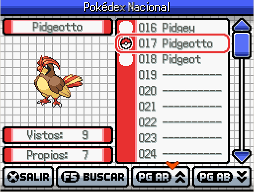
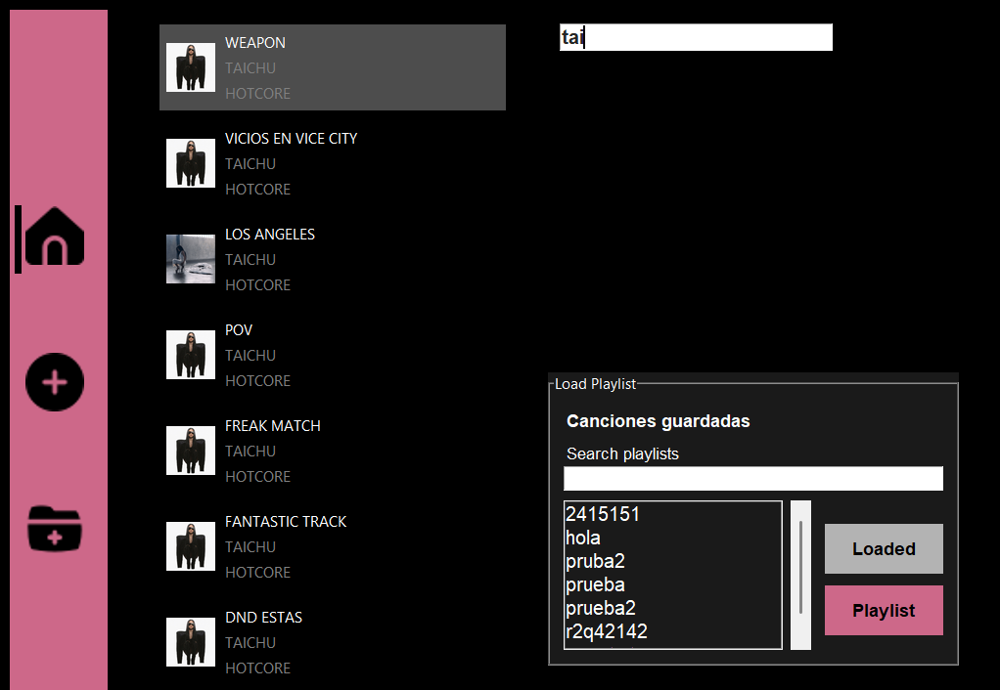

¡Hola! Soy Ticiana Garin
Estudio computación en el Instito Industrial Luis A. Huergo. Actualmente estoy aprendiendo
y trabajando en distintas áreas de la informática, desde redes, programación y
estructuras de datos hasta diseño web y manejo y análisis de bases de datos.
Este espacio reúne algunos de esos proyectos, mis conocimientos y todo lo que voy construyendo mientras sigo aprendiendo.
Habilidades
Proyectos

Cuida a tu salame
Desarrollado en Python con Pygame, en el que el objetivo es cuidar y mantener a salvo a tu salame.
Repositorio
Pokemon
Una Pokédex desarrollada en Python que la cual permite gestionar una Pokédex y un equipo Pokémon con el que podes derrotar distintos líderes de gimnasios.
Repositorio
Music Replay
Un reproductor de música que permite gestionar y reproducir canciones desde una interfaz propia.
Repositorio